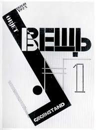

What is Constructivism?
Constructivism is an artistic movement that happened in Russia during the 1920s and influenced modern design and architecture.
Constructivism was started in 1913 by Vladimir Tatlin. He was opposed to the idea of "automous art" and he wanted to construct art. The movement was in favor of art as a practice for social purposes (ie. creating posters for the government). Constructivism had a great inmpact on modern art movements of the 20th centuary. It influenced major movements such as the Bauhaus and De Stijil movements (to the left see example of El Lissitzky's construcivism work).
Some of the major elements of construcivism where heavy sans serif typefaces with few, but striking colors (ie. red, black, and occasionaly yellow). Much of the work included in this movement was designed to be striking and powerful. These pieces were designed to catch the eye of the viewer and be very dramatic. The design styles were originally intended for political messages, but have seeped into product advertisements and posters, including book covers and page design.
The major leaders of this movement are, Alexander Rodchenko, and Lazar Lissitzky. This is in no particular order, and more informaition about them can be found in the artists dropdown.
The term construcivism was coined by Kasmir Malevich in refrence to the work of Alexander Rodchenko.